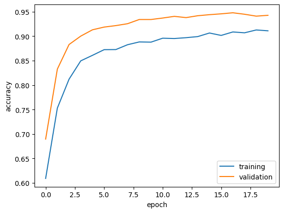

import os
from keras import utils
import tensorflow_datasets as tfds
import matplotlib.pyplot as plt
import numpy as np
os.environ["KERAS_BACKEND"] = "tensorflow"Introduction
Today we will be creating various keras models to help us classify images containing either cats or dogs. We will evaluate each model on a dataset to see which of our models has the highest accuracy.
Imports
This block is where we will begin our imports to be used for this project. We then change the backend of keras to be tensorflow as it will allow for our image augmentation layers to run faster.
import keras
from keras import layersWe have another import block in which we import keras and layers from keras. It is important that keras is imported after we change the backend to tensorflow, as that cannot be changed once keras has been imported.
train_ds, validation_ds, test_ds = tfds.load(
"cats_vs_dogs",
#40% for training, 10% for validation, and 10% for test (the rest unused)
split=["train[:40%]", "train[40%:50%]", "train[50%:60%]"],
as_supervised=True, #Include labels
)
print(f"Number of training samples: {train_ds.cardinality()}")
print(f"Number of validation samples: {validation_ds.cardinality()}")
print(f"Number of test samples: {test_ds.cardinality()}")Downloading and preparing dataset 786.67 MiB (download: 786.67 MiB, generated: 1.04 GiB, total: 1.81 GiB) to /root/tensorflow_datasets/cats_vs_dogs/4.0.1...
Dataset cats_vs_dogs downloaded and prepared to /root/tensorflow_datasets/cats_vs_dogs/4.0.1. Subsequent calls will reuse this data.
Number of training samples: 9305
Number of validation samples: 2326
Number of test samples: 2326WARNING:absl:1738 images were corrupted and were skippedThis block is used to access our data, as well as organizing it into datasets that will be used later. As we define our dataset names in the beginning as train_ds, validation_ds, and test_ds. We then call tfds.load, which loads datasets from the tensorflow_datasets library, which we then specify to be the “cats_vs_dogs” dataset. We then define splits for how much data will be implemented into each dataset. As you can see above, forty percent is dedicated to training, while only ten percent are allocated to both the validation and test datasets. Finally, we print out how many samples are in each dataset by calling the cardinality of each dataset. As expected, the number of training samples is approximately four times larger than that of the validation or testing datasets, which are themselves equal in size.
resize_fn = keras.layers.Resizing(150,150)
train_ds = train_ds.map(lambda x,y: (resize_fn(x),y))
validation_ds = validation_ds.map(lambda x,y : (resize_fn(x),y))
test_ds = test_ds.map(lambda x,y:(resize_fn(x), y))We now clean up our data a bit by creating a constant size for all samples. We can see that resize_fn calls a keras layer that resizes its input to be of size 150 x 150. We then use this layer to create lambda functions to be applied to all three of our datasets. We can now be sure of the dimensions of all of our samples in each of our datasets.
from tensorflow import data as tf_data
from tensorflow.keras.optimizers import Adam
batch_size = 64
train_ds = train_ds.batch(batch_size).prefetch(tf_data.AUTOTUNE).cache()
validation_ds = validation_ds.batch(batch_size).prefetch(tf_data.AUTOTUNE).cache()
test_ds = test_ds.batch(batch_size).prefetch(tf_data.AUTOTUNE).cache()This block is a bit technical. We import tf_data to be used in this block, as well as an optimizer called Adam that we will not use until later. The batch_size variable we define determines how many data points are gathered from the directory at once.
Visualization
def twoRowVis():
plt.figure(figsize=(10, 10))
for images, labels in train_ds.take(1):
dogNum = 0
catNum = 0
for i in range(32):
if labels[i].numpy() == 1 and dogNum < 3:
ax = plt.subplot(2, 3, dogNum + 1)
plt.imshow(images[i].numpy().astype("uint8"))
plt.title("dog")
plt.axis("off")
dogNum += 1
elif labels[i].numpy() == 0 and catNum < 3:
ax = plt.subplot(2, 3, 3 + catNum + 1)
plt.imshow(images[i].numpy().astype("uint8"))
plt.title("cat")
plt.axis("off")
catNum += 1
if dogNum == 3 and catNum == 3:
break
plt.show()
return
Above we have created a function for visualizing some of our images. We first set the size of the images by setting our figure size to (10,10). Now we need to access our images to be able to fill our plot. The method used to do this is take(1), which will retrieve one batch of images with labels, which we defined to be of size 64 in the previous code block. We will begin a for loop using these labels and images by calling for images and labels returned by the take method we call upon train_ds. It is critical to note that images containing dogs are labeled with a 1 while images with cats are labeled with a 0. Now that we have accessed our images, we wish to display a row of three images of dogs, followed by a row of three images with cats in them. In order to keep track of how many images of each have been displayed, we will create two variables titled numCats and numDogs respectively. We can now loop through and add images to a plot should they satisfy our criteria. We will first check if the image is a dog, by checking if the numpy attribute of the current label we are on is equal to 1. Additionally, we must check that we have not already entered the images for three dogs, by checking if numDog is less than three. Should this be true, we create a plot of dimensions (2,3) as we wish to have our plot contain two rows of three. We will then input this image into the plot at the first position. However as this is a loop, we cannot simply place 1, but rather we have to consider how the loop will deal with future images, which is where our numDogs variable will come in handy. We can send each image to the position 1+numDog in the plot, as they will each be placed one after another as we continually increment numDog. We can then use plt.imshow() to display our image, which can be called by using images[i].numpy(), as this image corresponds to the label we checked at the beginning of the if statement. Finally, we can set the title of our image to be label, turn off the axis, and increment our numDog and we are done with the first portion of our function. Placing our cats in the bottom row is very similar to what we just did, but with a few minor tweaks. First off, in our if statement condition, we want to ensure that the label is equal to 0, not 1. Secondly, as we want the cats to be on the bottom, we will add an extra three to their position in the plot, as they will then begin being placed in the bottom row. Other than that, as long as we make sure to use numCat in our position and incrementation instead of numDog, our cat placement should be complete. Finally, to ensure we finish as we place our final image in, we call a final if statement, where if both numCat and numDog are equal to or greater than three, we break out of our loop. After our loop has concluded, we can call plt.show() and our function is complete.
# Calling visualization function defined above
twoRowVis()As you can see, we call the function twoRowVis() that we created in the above code block, and it displays a row of three images with dogs followed by a row of three cat images. Notice how the labels above all the dogs are 1 and above all the cats are 0.
# Creating a label iterator
labels_iterator=train_ds.unbatch().map(lambda image, label: label).as_numpy_iterator()We now will create a label iterator so that we can check the number of cats and dogs in our training dataset. To do so, we unbatch train_ds to get all of our information, and then use a lambda function to extract just the labels. Finally we use the as_numpy_iterator() function to transform it into an iterator, yielding the iterator we title labels_iterator.
# Compute the number of cats (labelled 0) and dogs (labelled 1) in training data
catCounter = 0
dogCounter = 0
for label in labels_iterator:
if label==0:
catCounter = catCounter+1
elif label==1:
dogCounter = dogCounter+1
print("Number of cats is: ", catCounter)
print("Number of dogs is: ", dogCounter)Number of cats is: 4637
Number of dogs is: 4668Here we use our label iterator that we made prviously to caluclate the number of cats and dogs in our training dataset. We will create two variables that will be used to count the number of cats and dogs in our dataset, titled catCounter and dogCounter. Recall that cats are distinguished with a label of 0 while dogs have a label of 1. We use this information to run through the iterator, incrementing the catCounter when we find a label equal to zero, and incrementing dogCounter when we encounter a label equal to one. Finally, we print out our results and find that there is a similar number of cat and dog images, 4,637 and 4,668 respectively.
This information can be used to estimate the accuracy of a baseline learning model, a model that simply guesses the most frequent label each time. As we can see, there are more dogs in this dataset, therefore the baseline would guess dog every time. We can calculate the accuracy by taking how many times it would be correct over the total samples, yielding 4,668/9,305= 0.50166, or approximately 50.166% accuracy.
First Model
# Create a sequential model
model = keras.Sequential()
model.add(layers.Input((150,150,3)))
# Convolutional layers
model.add(layers.Conv2D(32, (3, 3), activation='relu'))
model.add(layers.MaxPooling2D(pool_size=(2, 2)))
model.add(layers.Conv2D(64, (3, 3), activation='relu'))
model.add(layers.MaxPooling2D(pool_size=(2, 2)))
# Flatten layer to convert 2D feature maps to a vector
model.add(layers.Flatten())
# Fully connected layers
model.add(layers.Dense(128, activation='relu'))
model.add(layers.Dropout(0.5)) # Dropout layer to prevent overfitting
# Output layer with binary classification (sigmoid activation for binary classification)
model.add(layers.Dense(2))
# Compile the model
model.compile(optimizer='adam', loss=keras.losses.SparseCategoricalCrossentropy(from_logits=True), metrics=['accuracy'])
# Print the model summary
model.summary()
Model: "sequential"
_________________________________________________________________
Layer (type) Output Shape Param #
=================================================================
conv2d (Conv2D) (None, 148, 148, 32) 896
max_pooling2d (MaxPooling2 (None, 74, 74, 32) 0
D)
conv2d_1 (Conv2D) (None, 72, 72, 64) 18496
max_pooling2d_1 (MaxPoolin (None, 36, 36, 64) 0
g2D)
flatten (Flatten) (None, 82944) 0
dense (Dense) (None, 128) 10616960
dropout (Dropout) (None, 128) 0
dense_1 (Dense) (None, 2) 258
=================================================================
Total params: 10636610 (40.58 MB)
Trainable params: 10636610 (40.58 MB)
Non-trainable params: 0 (0.00 Byte)
_________________________________________________________________We will now create our first keras sequential model. We start by initializing our model, titled model, to be an instance of keras.Sequential(). Now we can begin introducing our layers. Firstly, as we know the dimensions of each of our inputs, we can give this information to the model by adding an Input layer, specifying that each input will be of size (150,150,3). We know the dimensions as we resized each image earlier to be of size (150,150), and then each image has rgb coloring, representing the final dimension of size 3. We can now begin adding our convolutional layers to our model. We start by adding a layer called Conv2D. These layers effectively sharpen the image passed through them by increasing the contrast between pixels by passing them through a kernel. They slightly change the size of the image, as we can see in our summary above by looking at the input it is passed in and observing the difference between its output. We then implement several MaxPooling2D layers. Put somewhat simply, these down-sample the spatial dimensions of the input, while retaining most of the important information. After two iterations of both of those layers, we call a Flatten layer, which converts its input into a one dimension. This then allows us to call Dense layers, which require a flattened input. Our first dense layer has an argument of 128 passed to it, meaning it is functioning with 128 neurons. After our first dense layer, we implement a dropout layer which excludes various nodes with a probability passed into it, with the intention to combat overfitting. Finally, we call a dense layer with only two categories so that the model can determine if the test image is either a cat or dog. You may notice that several of the layers have an activation argument introduced. These activations are mathematical functions applied to the output of a layer which serve as a way to introduce non-linearity into our model. Additionally, in our final dense layer, we see an optimizer and loss argument. These serve to help the network know what kind of loss it should be trying to avoid, as well as adjust weights and learning rates in order to get a more accurate final result. At the end of this layer, we call metrics = [‘accuracy’] to ensure that we can access information on the accuracy when we train the model. Finally, we call model.summary() to get the representation of the model we see outputted above.
# Train model1 here
history = model.fit(train_ds,
epochs=20,
validation_data=validation_ds)Epoch 1/20
146/146 [==============================] - 17s 73ms/step - loss: 19.3372 - accuracy: 0.5457 - val_loss: 0.6769 - val_accuracy: 0.5464
Epoch 2/20
146/146 [==============================] - 5s 34ms/step - loss: 0.6161 - accuracy: 0.6516 - val_loss: 0.6674 - val_accuracy: 0.6032
Epoch 3/20
146/146 [==============================] - 5s 34ms/step - loss: 0.5227 - accuracy: 0.7246 - val_loss: 0.7363 - val_accuracy: 0.5860
Epoch 4/20
146/146 [==============================] - 5s 33ms/step - loss: 0.4344 - accuracy: 0.7883 - val_loss: 0.7968 - val_accuracy: 0.5817
Epoch 5/20
146/146 [==============================] - 5s 34ms/step - loss: 0.3732 - accuracy: 0.8245 - val_loss: 0.8865 - val_accuracy: 0.5886
Epoch 6/20
146/146 [==============================] - 5s 34ms/step - loss: 0.3202 - accuracy: 0.8604 - val_loss: 0.9987 - val_accuracy: 0.5817
Epoch 7/20
146/146 [==============================] - 5s 36ms/step - loss: 0.3381 - accuracy: 0.8528 - val_loss: 0.9540 - val_accuracy: 0.5911
Epoch 8/20
146/146 [==============================] - 5s 34ms/step - loss: 0.2380 - accuracy: 0.9017 - val_loss: 1.1495 - val_accuracy: 0.5877
Epoch 9/20
146/146 [==============================] - 5s 34ms/step - loss: 0.2813 - accuracy: 0.8816 - val_loss: 1.1250 - val_accuracy: 0.6015
Epoch 10/20
146/146 [==============================] - 5s 34ms/step - loss: 0.2122 - accuracy: 0.9159 - val_loss: 1.4047 - val_accuracy: 0.5916
Epoch 11/20
146/146 [==============================] - 5s 34ms/step - loss: 0.1932 - accuracy: 0.9244 - val_loss: 1.4502 - val_accuracy: 0.6019
Epoch 12/20
146/146 [==============================] - 5s 34ms/step - loss: 0.1561 - accuracy: 0.9461 - val_loss: 1.5631 - val_accuracy: 0.5972
Epoch 13/20
146/146 [==============================] - 5s 34ms/step - loss: 0.1751 - accuracy: 0.9371 - val_loss: 1.6239 - val_accuracy: 0.5976
Epoch 14/20
146/146 [==============================] - 5s 35ms/step - loss: 0.1599 - accuracy: 0.9416 - val_loss: 1.6674 - val_accuracy: 0.6122
Epoch 15/20
146/146 [==============================] - 5s 34ms/step - loss: 0.1325 - accuracy: 0.9520 - val_loss: 1.7750 - val_accuracy: 0.5907
Epoch 16/20
146/146 [==============================] - 5s 36ms/step - loss: 0.1415 - accuracy: 0.9498 - val_loss: 1.7944 - val_accuracy: 0.6045
Epoch 17/20
146/146 [==============================] - 5s 37ms/step - loss: 0.2000 - accuracy: 0.9327 - val_loss: 1.6671 - val_accuracy: 0.6148
Epoch 18/20
146/146 [==============================] - 5s 34ms/step - loss: 0.1824 - accuracy: 0.9341 - val_loss: 1.7361 - val_accuracy: 0.6066
Epoch 19/20
146/146 [==============================] - 5s 34ms/step - loss: 0.1369 - accuracy: 0.9522 - val_loss: 1.5825 - val_accuracy: 0.6032
Epoch 20/20
146/146 [==============================] - 5s 34ms/step - loss: 0.1059 - accuracy: 0.9636 - val_loss: 1.9182 - val_accuracy: 0.6234We now will train our newly created model on our training dataset. We want to save this training so that we access the information later to get more information on how our training evolved over time. We initiate training with the fit() method, passing train_ds as an argument representing the dataset to train over, as well as the number of epochs we wish to run, and the validation dataset to test on after each dataset. We can note that our validation accuracy settled between 59% and 63% by the final epochs. This represents an improvement over our baseline which we calculated to have an accuracy of just over 50%. With regards to overfitting, we can observe there is definitely a prominent presence as our validation accuracy began to stagnate at around 60% while the training accuracy continued to improve, reaching above 95% accuracy. Note that the graph being referred to is displayed just below.
plt.plot(history.history["accuracy"], label="training")
plt.plot(history.history['val_accuracy'], label="validation")
plt.gca().set(xlabel="epoch", ylabel="accuracy")
plt.legend()In order to visualize how our model did, we plot the training accuracy as well as the validation accuracy accross each epoch. We can see in this case that our validation accuracy remained somewhat stagnant while our training accuracy continued to increase, a sign that overfitting became a significant factor.
Second Model
#Demonstrate flipping
modelFlip = keras.Sequential()
modelFlip.add(layers.RandomFlip())
for images, labels in train_ds.take(1):
plt.subplot(1, 3, 1)
plt.imshow(images[0].numpy().astype("uint8"))
plt.title("Original Image")
plt.axis("off")
plt.subplot(1, 3, 2)
plt.imshow(modelFlip(images[0]).numpy().astype("uint8"))
plt.title("Flipped Image")
plt.axis("off")
plt.subplot(1, 3, 3)
plt.imshow(modelFlip(images[0]).numpy().astype("uint8"))
plt.title("Flipped Image")
plt.axis("off")
plt.show()
In this section we are experimenting with data augmentation layers, more specifically RandomFlip() and RandomRotation(). Starting with RandomFlip() we start of by making a model with just a RandomFlip() layer in it. We can demonstrate what this layer does by passing images through it and displaying what is outputted. On the left we see the first image from our train_ds dataset, shown using pyplot. To find out what happens when using the flipped layer, we display the same image, however when passing the image to imshow(), we apply the model to the image. What comes out is a reflected version of our original image, as you can see in the middle. We can do this same process one more time, and as we can see from the third image, we get another flipped version of our original image, however this one is flipped horizontally instead of vertically. If we do not pass any arguments to RandomFlip() we can see from the above images that it can flip the images both vertically and horizontally. Should we want it to only be able to flip images vertically we can pass the argument ‘vertical’ into the layer, and we will only get vertical flips.
#Demonstrate rotating
modelRotate = keras.Sequential()
modelRotate.add(layers.RandomRotation(factor = 0.2))
#plt.figure(figsize=(10,10))
for images, labels in train_ds.take(1):
ax = plt.subplot(1, 3, 1)
plt.imshow(images[0].numpy().astype("uint8"))
plt.title("Original Image")
plt.axis("off")
#plt.show()
ax = plt.subplot(1,3,2)
plt.imshow(modelRotate(images[0]).numpy().astype("uint8"))
plt.title("Rotated Image")
plt.axis("off")
#plt.show()
ax = plt.subplot(1, 3, 3)
plt.imshow(modelRotate(images[0]).numpy().astype("uint8"))
plt.title("Rotated Image")
plt.axis("off")
plt.show()
Similar to our RandomFlip() demonstration above, here we are showing what a RandomRotation() layer does to an image. Again, we have our original image on the left. We can see from the second image that when we apply a RandomRotation() layer to our image is slightly rotated, in this case clockwise. Running the image through the layer again results in a different rotation as seen in image three. The amount of rotation can be controlled by passing a rotation factor, in this case we used 0.2. This factor represents a factor of 2 Pi, which becomes the maximum roatation this layer will provide, given that 2 Pi is a complete spin.
# Create a sequential model
model2 = keras.Sequential()
model2.add(layers.Input((150,150,3)))
# Augmentation Layers
model2.add(layers.RandomFlip('vertical'))
model2.add(layers.RandomRotation(factor=0.2))
# Convolutional layers
model2.add(layers.Conv2D(32, (3, 3), activation='relu'))
model2.add(layers.MaxPooling2D(pool_size=(3, 3)))
model2.add(layers.Conv2D(32, (3, 3), activation='relu'))
model2.add(layers.MaxPooling2D(pool_size=(3, 3)))
model2.add(layers.Conv2D(32, (3, 3), activation='relu'))
model2.add(layers.MaxPooling2D(pool_size=(3, 3)))
model2.add(layers.Conv2D(32,(3,3), activation = 'relu'))
# Dropout layer to prevent overfitting
model2.add(layers.Dropout(0.1))
# Flatten layer to convert 2D feature maps to a vector
model2.add(layers.Flatten())
# Fully connected layers
model2.add(layers.Dense(64, activation='relu'))
# Output layer
model2.add(layers.Dense(2))
# Compile the model
model2.compile(optimizer=Adam(learning_rate=0.0001), loss=keras.losses.SparseCategoricalCrossentropy(from_logits=True), metrics=['accuracy'])
# Print the model summary
model2.summary()
Model: "sequential_3"
_________________________________________________________________
Layer (type) Output Shape Param #
=================================================================
random_flip_1 (RandomFlip) (None, 150, 150, 3) 0
random_rotation_1 (RandomR (None, 150, 150, 3) 0
otation)
conv2d_2 (Conv2D) (None, 148, 148, 32) 896
max_pooling2d_2 (MaxPoolin (None, 49, 49, 32) 0
g2D)
conv2d_3 (Conv2D) (None, 47, 47, 32) 9248
max_pooling2d_3 (MaxPoolin (None, 15, 15, 32) 0
g2D)
conv2d_4 (Conv2D) (None, 13, 13, 32) 9248
max_pooling2d_4 (MaxPoolin (None, 4, 4, 32) 0
g2D)
conv2d_5 (Conv2D) (None, 2, 2, 32) 9248
dropout_1 (Dropout) (None, 2, 2, 32) 0
flatten_1 (Flatten) (None, 128) 0
dense_2 (Dense) (None, 64) 8256
dense_3 (Dense) (None, 2) 130
=================================================================
Total params: 37026 (144.63 KB)
Trainable params: 37026 (144.63 KB)
Non-trainable params: 0 (0.00 Byte)
_________________________________________________________________The main difference in between this model and the first one we created is in the augmentation layers we have been experimenting with. These are introduced at the beginning of the model, just after we define the input shape. Other than that we are essentially just building upon our previous model, with a couple key exceptions. When looking at our output Dense layer, our optimizer is slightly different than before, as we have Adam(learning_rate=0.0001) instead of just ‘adam’. As one may expect, Adam and ‘adam’ refer to the same optimizer, however we are now customizing it a bit by passing a specific learning_rate. A lower learning rate puts less emphasis on each sample and epoch, although too small a learning rate would lead to a model that learns very slowly. On the other hand, should we have a learning rate that is too high, we can experience severe oscillations within different epochs as there is a larger emphasis placed on each sample. It is important to find a good medium, and in our case, 0.0001 worked well for us to achieve our desired accuracy.
# Train model2 here
history2 = model2.fit(train_ds,
epochs=20,
validation_data=validation_ds)Epoch 1/20
146/146 [==============================] - 9s 36ms/step - loss: 1.5543 - accuracy: 0.5122 - val_loss: 0.7863 - val_accuracy: 0.5606
Epoch 2/20
146/146 [==============================] - 5s 32ms/step - loss: 0.7831 - accuracy: 0.5365 - val_loss: 0.6995 - val_accuracy: 0.5675
Epoch 3/20
146/146 [==============================] - 5s 32ms/step - loss: 0.7079 - accuracy: 0.5623 - val_loss: 0.6832 - val_accuracy: 0.5821
Epoch 4/20
146/146 [==============================] - 5s 31ms/step - loss: 0.6893 - accuracy: 0.5797 - val_loss: 0.6741 - val_accuracy: 0.5890
Epoch 5/20
146/146 [==============================] - 5s 33ms/step - loss: 0.6779 - accuracy: 0.5850 - val_loss: 0.6700 - val_accuracy: 0.5894
Epoch 6/20
146/146 [==============================] - 5s 32ms/step - loss: 0.6693 - accuracy: 0.5944 - val_loss: 0.6624 - val_accuracy: 0.5899
Epoch 7/20
146/146 [==============================] - 5s 32ms/step - loss: 0.6560 - accuracy: 0.6096 - val_loss: 0.6529 - val_accuracy: 0.6083
Epoch 8/20
146/146 [==============================] - 5s 32ms/step - loss: 0.6540 - accuracy: 0.6174 - val_loss: 0.6365 - val_accuracy: 0.6285
Epoch 9/20
146/146 [==============================] - 5s 32ms/step - loss: 0.6468 - accuracy: 0.6308 - val_loss: 0.6240 - val_accuracy: 0.6470
Epoch 10/20
146/146 [==============================] - 5s 32ms/step - loss: 0.6400 - accuracy: 0.6368 - val_loss: 0.6088 - val_accuracy: 0.6578
Epoch 11/20
146/146 [==============================] - 5s 32ms/step - loss: 0.6341 - accuracy: 0.6440 - val_loss: 0.5981 - val_accuracy: 0.6819
Epoch 12/20
146/146 [==============================] - 5s 32ms/step - loss: 0.6229 - accuracy: 0.6545 - val_loss: 0.5960 - val_accuracy: 0.6844
Epoch 13/20
146/146 [==============================] - 5s 33ms/step - loss: 0.6114 - accuracy: 0.6688 - val_loss: 0.5796 - val_accuracy: 0.6935
Epoch 14/20
146/146 [==============================] - 5s 32ms/step - loss: 0.6046 - accuracy: 0.6777 - val_loss: 0.5797 - val_accuracy: 0.6995
Epoch 15/20
146/146 [==============================] - 5s 33ms/step - loss: 0.5983 - accuracy: 0.6807 - val_loss: 0.5790 - val_accuracy: 0.6896
Epoch 16/20
146/146 [==============================] - 5s 32ms/step - loss: 0.5974 - accuracy: 0.6828 - val_loss: 0.5784 - val_accuracy: 0.6965
Epoch 17/20
146/146 [==============================] - 5s 32ms/step - loss: 0.5859 - accuracy: 0.6897 - val_loss: 0.5819 - val_accuracy: 0.6960
Epoch 18/20
146/146 [==============================] - 5s 33ms/step - loss: 0.5858 - accuracy: 0.6923 - val_loss: 0.5620 - val_accuracy: 0.7085
Epoch 19/20
146/146 [==============================] - 5s 32ms/step - loss: 0.5868 - accuracy: 0.6925 - val_loss: 0.5531 - val_accuracy: 0.7154
Epoch 20/20
146/146 [==============================] - 5s 33ms/step - loss: 0.5718 - accuracy: 0.7038 - val_loss: 0.5589 - val_accuracy: 0.7158We now will train our newly created model2 on our training dataset. We again want to save our training information so that we can analyze it afterwards. Similar to last time, we initiate training with the fit() method, passing train_ds as an argument representing the dataset to train over, as well as the number of epochs we wish to run, and the validation dataset to test on after each dataset, however this time we pass it to model2. We can note that our validation accuracy settled between 68% and 72% by the final epochs. This represents an improvement over our first model which we calculated to have an accuracy of between 59% and 63%. With regards to overfitting, there is not nearly as large of an issue as there was in our first model. Taking a look at the graph depicting training and validation accuracy, we can see that they have a similar trend and remain relatively close to each other throughout the epochs. Note that the graph being referred to is displayed just below.
# Visualize training history for model2
plt.plot(history2.history['accuracy'], label = "training")
plt.plot(history2.history['val_accuracy'], label = "validation")
plt.gca().set(xlabel="epoch", ylabel="accuracy")
plt.legend()
We run the same code we did last time to plot our training and validation accuracy, except this time calling history2 instead of history. As we can observe, our validation and training accuracies move much more in unison than they did in the previous model.
Third Model
i = keras.Input(shape=(150, 150, 3))
# The pixel values have the range of (0, 255), but many models will work better if rescaled to (-1, 1.)
# outputs: `(inputs * scale) + offset`
scale_layer = keras.layers.Rescaling(scale=1 / 127.5, offset=-1)
x = scale_layer(i)
preprocessor = keras.Model(inputs = i, outputs = x)Here we are defining a preprocessor that modifies the data before running it through the rest of the model. In this case scenario, we are changing the pixel values from a scale of (0,255), to a scale of (-1,1). Often, models work better when working with this kind of scale. We can see how this is achieved as each shape is rescaled by dividing by 127.5, which puts all pixels in the range of (0,2), and then we offset by -1 to shift the range to (-1,1).
# Create a sequential model
model3 = keras.Sequential()
model3.add(layers.Input((150,150,3)))
# Augmentation Layers
model3.add(layers.RandomFlip('vertical'))
model3.add(layers.RandomRotation(factor=0.2))
# Adding preprocessor layer defined above
model3.add(preprocessor)
# Convolutional layers
model3.add(layers.Conv2D(32, (3, 3), activation='relu'))
model3.add(layers.MaxPooling2D(pool_size=(3, 3)))
model3.add(layers.Conv2D(32, (3, 3), activation='relu'))
model3.add(layers.MaxPooling2D(pool_size=(3, 3)))
model3.add(layers.Conv2D(32, (3, 3), activation='relu'))
model3.add(layers.MaxPooling2D(pool_size=(3, 3)))
model3.add(layers.Conv2D(32, (3,3), activation = 'relu'))
# Dropout layer to prevent overfitting
model3.add(layers.Dropout(0.1))
# Flatten layer to convert 2D feature maps to a vector
model3.add(layers.Flatten())
# Fully connected layers
model3.add(layers.Dense(64, activation='relu'))
# Output layer with binary classification (sigmoid activation for binary classification)
model3.add(layers.Dense(2))
# Compile the model
model3.compile(optimizer='adam', loss=keras.losses.SparseCategoricalCrossentropy(from_logits=True), metrics=['accuracy'])
# Print the model summary
model3.summary()
Model: "sequential_4"
_________________________________________________________________
Layer (type) Output Shape Param #
=================================================================
random_flip_2 (RandomFlip) (None, 150, 150, 3) 0
random_rotation_2 (RandomR (None, 150, 150, 3) 0
otation)
model (Functional) (None, 150, 150, 3) 0
conv2d_6 (Conv2D) (None, 148, 148, 32) 896
max_pooling2d_5 (MaxPoolin (None, 49, 49, 32) 0
g2D)
conv2d_7 (Conv2D) (None, 47, 47, 32) 9248
max_pooling2d_6 (MaxPoolin (None, 15, 15, 32) 0
g2D)
conv2d_8 (Conv2D) (None, 13, 13, 32) 9248
max_pooling2d_7 (MaxPoolin (None, 4, 4, 32) 0
g2D)
conv2d_9 (Conv2D) (None, 2, 2, 32) 9248
dropout_2 (Dropout) (None, 2, 2, 32) 0
flatten_2 (Flatten) (None, 128) 0
dense_4 (Dense) (None, 64) 8256
dense_5 (Dense) (None, 2) 130
=================================================================
Total params: 37026 (144.63 KB)
Trainable params: 37026 (144.63 KB)
Non-trainable params: 0 (0.00 Byte)
_________________________________________________________________The main difference between this model and model2 is that we are including the preprocessor we defined above. It is important to note that we are still including the data augmentation layers and have placed those before the preprocessor. This is because the job that the augmentation play is to slightly vary the data, which should then be passed to the preprocessor so it can take the varied data and apply the scale change to it. Looking closely we can see that we have applied the ‘vertical’ argument to the RandomFlip() layer, which we learned earlier allows RandomFlip() to flip layers vertically but not horizontally. Other than that, all of the key elements have remained the same from the previous model, so we are counting on the preprocessor to improve the results of our model.
# Train model3 here
history3 = model3.fit(train_ds,
epochs=20,
validation_data=validation_ds)Epoch 1/20
146/146 [==============================] - 7s 34ms/step - loss: 0.6631 - accuracy: 0.6002 - val_loss: 0.6185 - val_accuracy: 0.6612
Epoch 2/20
146/146 [==============================] - 5s 34ms/step - loss: 0.6265 - accuracy: 0.6460 - val_loss: 0.5861 - val_accuracy: 0.7068
Epoch 3/20
146/146 [==============================] - 5s 32ms/step - loss: 0.5859 - accuracy: 0.6903 - val_loss: 0.5503 - val_accuracy: 0.7283
Epoch 4/20
146/146 [==============================] - 5s 33ms/step - loss: 0.5621 - accuracy: 0.7122 - val_loss: 0.5401 - val_accuracy: 0.7322
Epoch 5/20
146/146 [==============================] - 5s 33ms/step - loss: 0.5364 - accuracy: 0.7367 - val_loss: 0.5216 - val_accuracy: 0.7472
Epoch 6/20
146/146 [==============================] - 5s 32ms/step - loss: 0.5275 - accuracy: 0.7348 - val_loss: 0.5263 - val_accuracy: 0.7459
Epoch 7/20
146/146 [==============================] - 5s 33ms/step - loss: 0.5058 - accuracy: 0.7543 - val_loss: 0.4944 - val_accuracy: 0.7670
Epoch 8/20
146/146 [==============================] - 5s 32ms/step - loss: 0.5059 - accuracy: 0.7562 - val_loss: 0.4947 - val_accuracy: 0.7653
Epoch 9/20
146/146 [==============================] - 5s 32ms/step - loss: 0.4926 - accuracy: 0.7639 - val_loss: 0.4986 - val_accuracy: 0.7605
Epoch 10/20
146/146 [==============================] - 5s 33ms/step - loss: 0.4827 - accuracy: 0.7673 - val_loss: 0.4855 - val_accuracy: 0.7691
Epoch 11/20
146/146 [==============================] - 5s 31ms/step - loss: 0.4756 - accuracy: 0.7702 - val_loss: 0.4638 - val_accuracy: 0.7743
Epoch 12/20
146/146 [==============================] - 5s 33ms/step - loss: 0.4727 - accuracy: 0.7761 - val_loss: 0.4475 - val_accuracy: 0.7919
Epoch 13/20
146/146 [==============================] - 5s 31ms/step - loss: 0.4586 - accuracy: 0.7836 - val_loss: 0.4548 - val_accuracy: 0.7876
Epoch 14/20
146/146 [==============================] - 5s 31ms/step - loss: 0.4562 - accuracy: 0.7881 - val_loss: 0.4528 - val_accuracy: 0.7923
Epoch 15/20
146/146 [==============================] - 5s 33ms/step - loss: 0.4468 - accuracy: 0.7903 - val_loss: 0.4528 - val_accuracy: 0.7928
Epoch 16/20
146/146 [==============================] - 5s 31ms/step - loss: 0.4433 - accuracy: 0.7881 - val_loss: 0.4387 - val_accuracy: 0.8035
Epoch 17/20
146/146 [==============================] - 5s 33ms/step - loss: 0.4356 - accuracy: 0.8008 - val_loss: 0.4383 - val_accuracy: 0.7984
Epoch 18/20
146/146 [==============================] - 5s 31ms/step - loss: 0.4286 - accuracy: 0.8014 - val_loss: 0.4258 - val_accuracy: 0.8031
Epoch 19/20
146/146 [==============================] - 5s 32ms/step - loss: 0.4287 - accuracy: 0.8054 - val_loss: 0.4267 - val_accuracy: 0.8100
Epoch 20/20
146/146 [==============================] - 5s 31ms/step - loss: 0.4171 - accuracy: 0.8059 - val_loss: 0.4229 - val_accuracy: 0.7962After training model3, we can see that our preprocessor did in fact make a difference. After fitting the model on our training dataset as we did previously and saving the information to history3, we see an improvement in accuracy. For this model, our validation accuracy settled between 80% and 82% by the final epochs. This represents an even more drastic improvement over our first model which we calculated to have an accuracy of between 57% and 60%. With regards to overfitting, there is not nearly as large of an issue as there was in our first model. When looking at the graph depicting training and validation accuracy, we note that they remain very close to each other throughout the training, even closer than our second model was. Note that the graph being referred to is displayed just below.
# Visualize training history for model2
plt.plot(history3.history['accuracy'], label="training")
plt.plot(history3.history['val_accuracy'], label="validation")
plt.gca().set(xlabel="epoch", ylabel="accuracy")
plt.legend()Again we are using saved information in history3 to visualize our training history. We can see that in this case our validation and training accuracy appear to be even closer than they have been before,
Fourth Model
IMG_SHAPE = (150, 150, 3)
base_model = keras.applications.MobileNetV3Large(input_shape=IMG_SHAPE,
include_top=False,
weights='imagenet')
base_model.trainable = False
i = keras.Input(shape=IMG_SHAPE)
x = base_model(i, training = False)
base_model_layer = keras.Model(inputs = i, outputs = x)WARNING:tensorflow:`input_shape` is undefined or non-square, or `rows` is not 224. Weights for input shape (224, 224) will be loaded as the default.Downloading data from https://storage.googleapis.com/tensorflow/keras-applications/mobilenet_v3/weights_mobilenet_v3_large_224_1.0_float_no_top_v2.h5
12683000/12683000 [==============================] - 1s 0us/stepIn this model we plan on implementing a pre-existing model to see if it can improve our accuracy. Above we are reading in the model, titled base_model, from keras, and passing it the shape of our images via the variable IMG_SHAPE. We will then implement this base layer into our model.
# Create a sequential model
model4 = keras.Sequential()
model4.add(layers.Input((150,150,3)))
# Augmentation Layers
model4.add(layers.RandomFlip())
model4.add(layers.RandomRotation(factor=10.0))
# Adding layer defined above
model4.add(base_model_layer)
#Flatten
model4.add(layers.Flatten())
# Output layer with binary classification (sigmoid activation for binary classification)
model4.add(layers.Dense(2))
# Compile the model
model4.compile(optimizer=Adam(learning_rate=0.0001), loss=keras.losses.SparseCategoricalCrossentropy(from_logits=True), metrics=['accuracy'])
# Print the model summary
model4.summary()
Model: "sequential_5"
_________________________________________________________________
Layer (type) Output Shape Param #
=================================================================
random_flip_3 (RandomFlip) (None, 150, 150, 3) 0
random_rotation_3 (RandomR (None, 150, 150, 3) 0
otation)
model_1 (Functional) (None, 5, 5, 960) 2996352
flatten_3 (Flatten) (None, 24000) 0
dense_6 (Dense) (None, 2) 48002
=================================================================
Total params: 3044354 (11.61 MB)
Trainable params: 48002 (187.51 KB)
Non-trainable params: 2996352 (11.43 MB)
_________________________________________________________________As we can observem, this model appears to be much simpler than the previous models we created. Just by looking at the summary we would assume so as it is simply much shorter than the other ones. However we must take into account the fact that we have an entirely separate model built into this one we just created. While we have not included any Conv2D or Pooling2D layers in this model, it is important to note that we have still included our augmentation layers, as well as a Flatten layer followed by a Dense layer to give us our output. You may be wondering why we decided not to include our preprocessor that we introduced in the previous model. The reason is that the base_model_layer that we just added includes its own preprocessing layers, eliminating the need for us to introduce more. Now that we have created our model4, we can train it and see what kind of improvements this new model will experience.
# Train model4 here
history4 = model4.fit(train_ds,
epochs=20,
validation_data=validation_ds)Epoch 1/20
146/146 [==============================] - 16s 66ms/step - loss: 0.5881 - accuracy: 0.8287 - val_loss: 0.1966 - val_accuracy: 0.9415
Epoch 2/20
146/146 [==============================] - 7s 45ms/step - loss: 0.3310 - accuracy: 0.9026 - val_loss: 0.1872 - val_accuracy: 0.9441
Epoch 3/20
146/146 [==============================] - 7s 46ms/step - loss: 0.2897 - accuracy: 0.9104 - val_loss: 0.1750 - val_accuracy: 0.9531
Epoch 4/20
146/146 [==============================] - 6s 44ms/step - loss: 0.2409 - accuracy: 0.9208 - val_loss: 0.1569 - val_accuracy: 0.9540
Epoch 5/20
146/146 [==============================] - 7s 45ms/step - loss: 0.2417 - accuracy: 0.9260 - val_loss: 0.1402 - val_accuracy: 0.9570
Epoch 6/20
146/146 [==============================] - 6s 44ms/step - loss: 0.2258 - accuracy: 0.9289 - val_loss: 0.1669 - val_accuracy: 0.9544
Epoch 7/20
146/146 [==============================] - 7s 45ms/step - loss: 0.2182 - accuracy: 0.9290 - val_loss: 0.1505 - val_accuracy: 0.9557
Epoch 8/20
146/146 [==============================] - 7s 48ms/step - loss: 0.2030 - accuracy: 0.9349 - val_loss: 0.1472 - val_accuracy: 0.9549
Epoch 9/20
146/146 [==============================] - 7s 45ms/step - loss: 0.1871 - accuracy: 0.9391 - val_loss: 0.1539 - val_accuracy: 0.9592
Epoch 10/20
146/146 [==============================] - 7s 46ms/step - loss: 0.1862 - accuracy: 0.9392 - val_loss: 0.1547 - val_accuracy: 0.9531
Epoch 11/20
146/146 [==============================] - 7s 45ms/step - loss: 0.1853 - accuracy: 0.9372 - val_loss: 0.1480 - val_accuracy: 0.9587
Epoch 12/20
146/146 [==============================] - 7s 45ms/step - loss: 0.1834 - accuracy: 0.9396 - val_loss: 0.1209 - val_accuracy: 0.9617
Epoch 13/20
146/146 [==============================] - 7s 45ms/step - loss: 0.1783 - accuracy: 0.9434 - val_loss: 0.1206 - val_accuracy: 0.9609
Epoch 14/20
146/146 [==============================] - 6s 44ms/step - loss: 0.1604 - accuracy: 0.9467 - val_loss: 0.1468 - val_accuracy: 0.9549
Epoch 15/20
146/146 [==============================] - 7s 46ms/step - loss: 0.1656 - accuracy: 0.9412 - val_loss: 0.1350 - val_accuracy: 0.9622
Epoch 16/20
146/146 [==============================] - 7s 46ms/step - loss: 0.1714 - accuracy: 0.9436 - val_loss: 0.1314 - val_accuracy: 0.9596
Epoch 17/20
146/146 [==============================] - 7s 46ms/step - loss: 0.1507 - accuracy: 0.9470 - val_loss: 0.1344 - val_accuracy: 0.9635
Epoch 18/20
146/146 [==============================] - 7s 45ms/step - loss: 0.1532 - accuracy: 0.9485 - val_loss: 0.1214 - val_accuracy: 0.9622
Epoch 19/20
146/146 [==============================] - 7s 45ms/step - loss: 0.1498 - accuracy: 0.9473 - val_loss: 0.1260 - val_accuracy: 0.9596
Epoch 20/20
146/146 [==============================] - 7s 45ms/step - loss: 0.1484 - accuracy: 0.9495 - val_loss: 0.1409 - val_accuracy: 0.9630After again fitting the model on our training dataset as we did previously and saving the information, we see a drastic improvement in our accuracy, largely due to the new model that we built off of. For this model, our validation accuracy settled between 94% and 96% by the final epochs. This represents a massive drastic improvement over our first model which we calculated to have an accuracy of between 57% and 60%. In fact, this is also a massive improvement over our second model, as we jumped up from around 80%. With regards to overfitting, we can see that the validation in fact experiences much higher accuracy rates than the training sets did. This is not typically a sign of overfitting, as for an overfit model normally the opposite is true. Note that the graph being referred to is displayed just below.
# Visualize training history for model4
plt.plot(history4.history['accuracy'], label="training")
plt.plot(history4.history['val_accuracy'], label="validation")
plt.gca().set(xlabel="epoch", ylabel="accuracy")
plt.legend()After again graphing the training and validation accuracies, we can see that this most recent model has had by far the most success in predicting dogs and cats, peaking at around 94% success for training and 96% for validation. It is somewhat curious that the validation has a higher accuracy rate than the training does, as typically it is the other way around.
Final Model
#Create model and test against test dataset
finalModel = keras.Sequential()
finalModel.add(layers.Input((150,150,3)))
# Augmentation Layers
finalModel.add(layers.RandomFlip())
finalModel.add(layers.RandomRotation(factor=0.2))
# Adding layer defined above
finalModel.add(base_model_layer)
#Adding convolution layer
finalModel.add(layers.GlobalMaxPooling2D())
#finalModel.add(layers.Dropout(0.1))
#Flatten
finalModel.add(layers.Flatten())
# Output layer with binary classification (sigmoid activation for binary classification)
finalModel.add(layers.Dense(2))
# Compile the model
finalModel.compile(optimizer=Adam(learning_rate=0.0001), loss=keras.losses.SparseCategoricalCrossentropy(from_logits=True), metrics=['accuracy'])
# Print the model summary
finalModel.summary()Model: "sequential_6"
_________________________________________________________________
Layer (type) Output Shape Param #
=================================================================
random_flip_4 (RandomFlip) (None, 150, 150, 3) 0
random_rotation_4 (RandomR (None, 150, 150, 3) 0
otation)
model_1 (Functional) (None, 5, 5, 960) 2996352
global_max_pooling2d (Glob (None, 960) 0
alMaxPooling2D)
flatten_4 (Flatten) (None, 960) 0
dense_7 (Dense) (None, 2) 1922
=================================================================
Total params: 2998274 (11.44 MB)
Trainable params: 1922 (7.51 KB)
Non-trainable params: 2996352 (11.43 MB)
_________________________________________________________________For our final model we are trying to get as accurate as possible. Seeing as our most recent model had an accuracy of around 95%, it does not make sense to deviate too much from that model. Hence, this model is very reminiscent of our previous one, with a couple of tweaks. After our base_model_layer, we have added a convolution layer, GlobalMaxPooling2D, and then from there it remains the same as before. Time to see how well our new model performs.
# Train finalModel here
finalHistory = finalModel.fit(train_ds,
epochs=20,
validation_data=validation_ds)Epoch 1/20
146/146 [==============================] - 12s 56ms/step - loss: 3.8295 - accuracy: 0.6091 - val_loss: 2.4163 - val_accuracy: 0.6896
Epoch 2/20
146/146 [==============================] - 7s 46ms/step - loss: 1.8335 - accuracy: 0.7530 - val_loss: 1.2446 - val_accuracy: 0.8328
Epoch 3/20
146/146 [==============================] - 6s 44ms/step - loss: 1.2931 - accuracy: 0.8121 - val_loss: 0.8283 - val_accuracy: 0.8831
Epoch 4/20
146/146 [==============================] - 6s 44ms/step - loss: 1.0553 - accuracy: 0.8497 - val_loss: 0.6857 - val_accuracy: 0.9003
Epoch 5/20
146/146 [==============================] - 7s 45ms/step - loss: 0.9403 - accuracy: 0.8609 - val_loss: 0.5691 - val_accuracy: 0.9132
Epoch 6/20
146/146 [==============================] - 6s 44ms/step - loss: 0.8372 - accuracy: 0.8725 - val_loss: 0.5087 - val_accuracy: 0.9187
Epoch 7/20
146/146 [==============================] - 6s 44ms/step - loss: 0.8271 - accuracy: 0.8728 - val_loss: 0.4742 - val_accuracy: 0.9218
Epoch 8/20
146/146 [==============================] - 7s 45ms/step - loss: 0.7453 - accuracy: 0.8826 - val_loss: 0.4405 - val_accuracy: 0.9256
Epoch 9/20
146/146 [==============================] - 7s 46ms/step - loss: 0.6927 - accuracy: 0.8883 - val_loss: 0.3828 - val_accuracy: 0.9342
Epoch 10/20
146/146 [==============================] - 6s 44ms/step - loss: 0.6712 - accuracy: 0.8879 - val_loss: 0.3686 - val_accuracy: 0.9342
Epoch 11/20
146/146 [==============================] - 7s 45ms/step - loss: 0.6137 - accuracy: 0.8960 - val_loss: 0.3487 - val_accuracy: 0.9372
Epoch 12/20
146/146 [==============================] - 7s 46ms/step - loss: 0.6280 - accuracy: 0.8953 - val_loss: 0.3209 - val_accuracy: 0.9407
Epoch 13/20
146/146 [==============================] - 6s 45ms/step - loss: 0.6124 - accuracy: 0.8970 - val_loss: 0.3180 - val_accuracy: 0.9381
Epoch 14/20
146/146 [==============================] - 7s 46ms/step - loss: 0.5795 - accuracy: 0.8993 - val_loss: 0.2963 - val_accuracy: 0.9420
Epoch 15/20
146/146 [==============================] - 6s 44ms/step - loss: 0.4950 - accuracy: 0.9066 - val_loss: 0.2871 - val_accuracy: 0.9441
Epoch 16/20
146/146 [==============================] - 7s 45ms/step - loss: 0.5141 - accuracy: 0.9017 - val_loss: 0.2713 - val_accuracy: 0.9458
Epoch 17/20
146/146 [==============================] - 7s 46ms/step - loss: 0.4813 - accuracy: 0.9088 - val_loss: 0.2583 - val_accuracy: 0.9480
Epoch 18/20
146/146 [==============================] - 6s 44ms/step - loss: 0.4964 - accuracy: 0.9070 - val_loss: 0.2568 - val_accuracy: 0.9450
Epoch 19/20
146/146 [==============================] - 6s 44ms/step - loss: 0.4581 - accuracy: 0.9128 - val_loss: 0.2860 - val_accuracy: 0.9411
Epoch 20/20
146/146 [==============================] - 7s 45ms/step - loss: 0.4521 - accuracy: 0.9111 - val_loss: 0.2522 - val_accuracy: 0.9428We can see that this model again experienced exceptional accuracy, settling at around 95% for the validation sets. However this time we are going to go a step further and test it on our test_ds dataset that we are yet to use.
# Visualize training history for finalModel
plt.plot(finalHistory.history['accuracy'], label="training")
plt.plot(finalHistory.history['val_accuracy'], label="validation")
plt.gca().set(xlabel="epoch", ylabel="accuracy")
plt.legend()
After again plotting validatin and training accuracy throughout the training process, it makes sense that this graph appears similar to that of our previous model, as the two models are very similar in nature.
finalModel.evaluate(test_ds)37/37 [==============================] - 3s 77ms/step - loss: 0.3496 - accuracy: 0.9450[0.349590927362442, 0.944969892501831]To test our model on our test dataset, we call then method evaluate() and pass it test_ds, so that it knows what to test our model on. We can see that we achieve an accuracy of just over 94%, a very respectable result indeed.